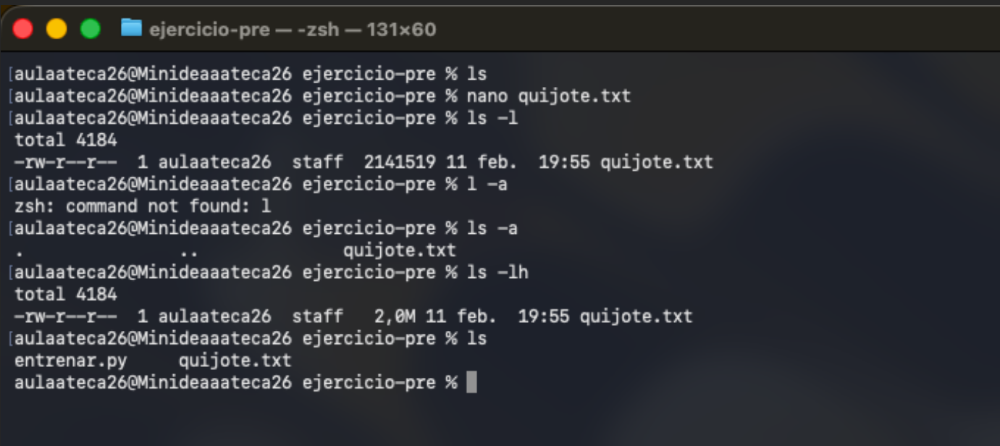
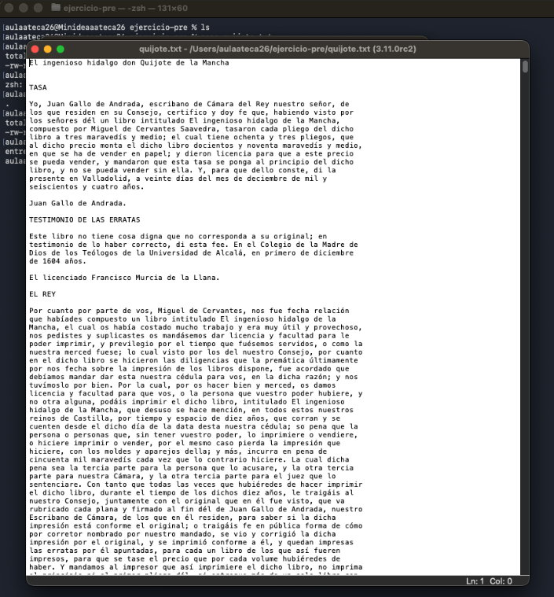
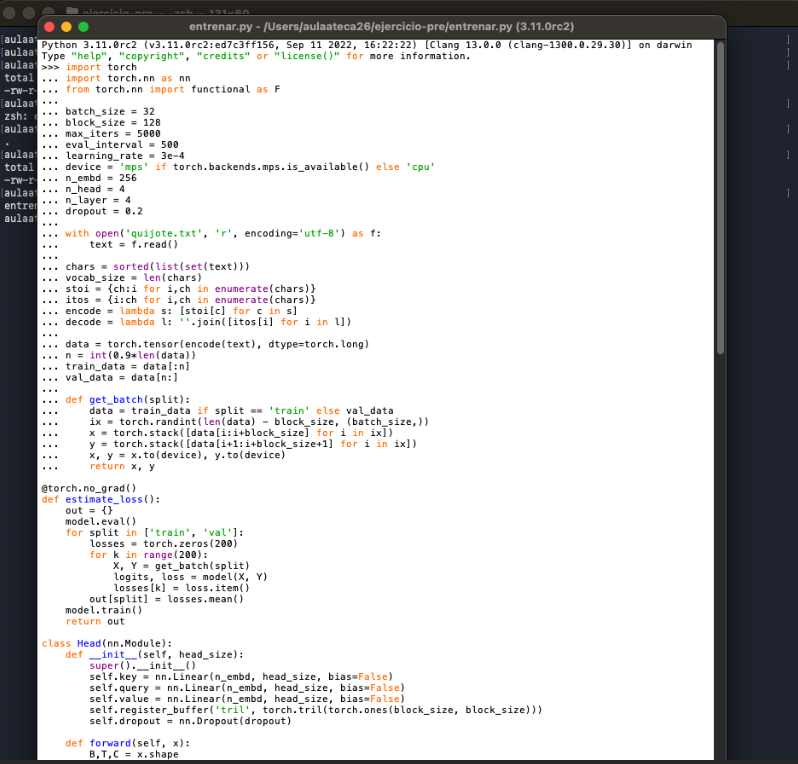
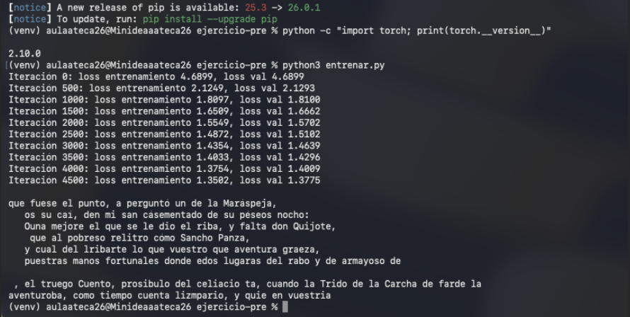
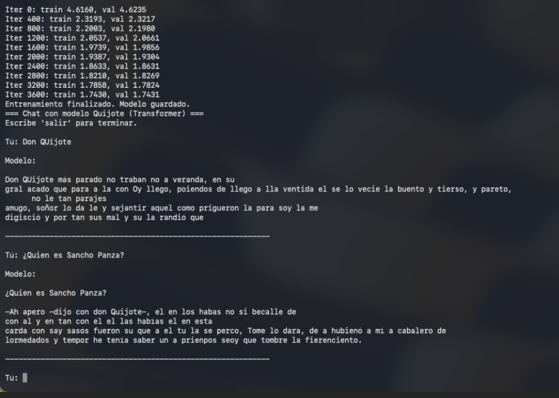
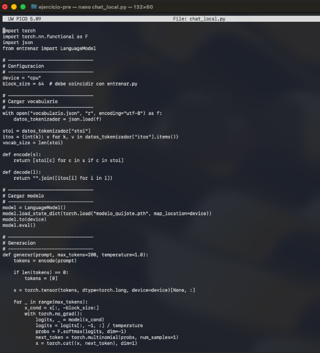

1. Contexto y objetivo del trabajo
El objetivo del proyecto ha sido entender, de forma práctica, cómo funciona el pre-entrenamiento de un modelo de lenguaje: desde la preparación del dataset y la tokenización, hasta la definición de la arquitectura Transformer, el bucle de entrenamiento y la generación de texto.
Para ello he seguido como guía el documento “Curso IA. Pre-Entrenamiento”, y he documentado mi propio proceso con capturas de pantalla y archivos de código.

Figura 1. Estructura inicial de la carpeta del proyecto.
2. Conceptos teóricos clave
2.1. Pre-entrenamiento
El pre-entrenamiento es la fase en la que un modelo de lenguaje aprende patrones del idioma y conocimiento general a partir de grandes cantidades de texto. La tarea básica consiste en predecir el siguiente token (palabra o carácter) a partir del contexto anterior.
2.2. Tokenización
Un modelo no trabaja directamente con texto, sino con números. El tokenizador es el componente que convierte caracteres o sub-palabras en IDs enteros y viceversa. En este proyecto he usado una tokenización a nivel de carácter, construyendo un vocabulario con todos los caracteres únicos presentes en el libro.
2.3. Arquitectura Transformer
El modelo que he implementado es un nano-Transformer, con capas de auto-atención (self-attention), múltiples cabezas de atención y capas feed-forward. Aunque es muy pequeño comparado con modelos como GPT-4, sigue los mismos principios: atención, embeddings de tokens y posiciones, bloques apilados y una capa final de clasificación sobre el vocabulario.
3. Preparación del dataset
3.1. Descarga del texto de Don Quijote
El corpus utilizado ha sido Don Quijote de la Mancha, descargado en formato texto plano (UTF-8) desde el Proyecto Gutenberg / UPM:
- Enlace al texto: quijote.txt
El archivo se ha guardado en la carpeta del proyecto con el nombre quijote.txt.

Figura 2. Archivo quijote.txt con el texto de Don Quijote.
3.2. Creación del vocabulario de caracteres
En Python, he leído el archivo y he creado el vocabulario de caracteres únicos:
with open('quijote.txt', 'r', encoding='utf-8') as f:
text = f.read()
chars = sorted(list(set(text)))
vocab_size = len(chars)
print("".join(chars))
print(f"Tamaño del vocabulario: {vocab_size}")Este vocabulario define todos los símbolos que el modelo puede “entender” y generar.
4. Implementación del tokenizador simple
A partir del vocabulario, he definido dos diccionarios: de carácter a entero (stoi)
y de entero a carácter (itos), junto con funciones de codificación y decodificación:
stoi = { ch:i for i, ch in enumerate(chars) }
itos = { i:ch for i, ch in enumerate(chars) }
encode = lambda s: [stoi[c] for c in s] # string → lista de enteros
decode = lambda l: "".join([itos[i] for i in l]) # lista de enteros → string
print(encode("DON QUIJOTE"))
print(decode(encode("DON QUIJOTE")))5. Definición y entrenamiento del nano-Transformer
5.1. Hiperparámetros y carga de datos
En el archivo entrenar.py he definido los hiperparámetros principales del modelo
y del entrenamiento (tamaño de batch, longitud de contexto, número de iteraciones, etc.),
así como la división del dataset en entrenamiento y validación:
batch_size = 32
block_size = 128
max_iters = 5000
eval_interval = 500
learning_rate = 3e-4
device = 'cuda' if torch.cuda.is_available() else 'cpu'
n_embd = 256
n_head = 4
n_layer = 4
dropout = 0.2
data = torch.tensor(encode(text), dtype=torch.long)
n = int(0.9 * len(data))
train_data = data[:n]
val_data = data[n:]También he definido una función get_batch para obtener lotes de secuencias:
def get_batch(split):
data = train_data if split == 'train' else val_data
ix = torch.randint(len(data) - block_size, (batch_size,))
x = torch.stack([data[i:i+block_size] for i in ix])
y = torch.stack([data[i+1:i+block_size+1] for i in ix])
x, y = x.to(device), y.to(device)
return x, y
Figura 4. Definición de hiperparámetros y carga de datos en entrenar.py.
5.2. Arquitectura del modelo
El modelo se compone de cabezas de atención, bloques multi-cabeza, capas feed-forward y bloques Transformer apilados. Finalmente, una capa lineal proyecta a la dimensión del vocabulario.
Ejemplo de la clase LanguageModel (resumen):
class LanguageModel(nn.Module):
def __init__(self):
super().__init__()
self.token_embedding_table = nn.Embedding(vocab_size, n_embd)
self.position_embedding_table = nn.Embedding(block_size, n_embd)
self.blocks = nn.Sequential(*[
Block(n_embd, n_head=n_head) for _ in range(n_layer)
])
self.ln_f = nn.LayerNorm(n_embd)
self.lm_head = nn.Linear(n_embd, vocab_size)
def forward(self, idx, targets=None):
B, T = idx.shape
tok_emb = self.token_embedding_table(idx)
pos_emb = self.position_embedding_table(torch.arange(T, device=device))
x = tok_emb + pos_emb
x = self.blocks(x)
x = self.ln_f(x)
logits = self.lm_head(x)
# cálculo de loss si hay targets...
return logits, loss5.3. Bucle de entrenamiento
El entrenamiento se realiza durante varias iteraciones, evaluando periódicamente el loss en entrenamiento y validación:
optimizer = torch.optim.AdamW(model.parameters(), lr=learning_rate)
for iter in range(max_iters):
if iter % eval_interval == 0:
losses = estimate_loss()
print(f"Iteración {iter}: loss entrenamiento {losses['train']:.4f}, "
f"loss val {losses['val']:.4f}")
xb, yb = get_batch('train')
logits, loss = model(xb, yb)
optimizer.zero_grad(set_to_none=True)
loss.backward()
optimizer.step()
Figura 6. Pérdida de entrenamiento y validación a lo largo de las iteraciones.
6. Resultados y generación de texto
Una vez finalizado el entrenamiento, el modelo es capaz de generar texto carácter a carácter imitando el estilo de Cervantes. El proceso de generación parte de un contexto inicial y va muestreando el siguiente token más probable.
Ejemplo de generación (resumen de lo obtenido):
Tú: Don Quijote
Modelo:
Don Quijote más parado no traban no a veranda, en su
gral acado que para a la con Oy llego, poiendos de llego a lla ventida...
Figura 7. Interacción de prueba con el modelo entrenado.
7. Script de chat local
Además del entrenamiento, he creado un pequeño script (chat_local.py) para cargar
el modelo entrenado y conversar con él desde la terminal. Este script:
- Carga el vocabulario desde un archivo JSON.
- Reconstruye el modelo
LanguageModely carga los pesos. - Implementa una función
generar()para producir texto a partir de un prompt.
model = LanguageModel()
model.load_state_dict(torch.load("modelo_quijote.pth", map_location=device))
model.to(device)
model.eval()
def generar(prompt, max_tokens=200, temperature=1.0):
tokens = encode(prompt)
if len(tokens) == 0:
tokens = [0]
x = torch.tensor(tokens, dtype=torch.long, device=device)[None, :]
# bucle de generación...
Figura 8. Script para chatear con el modelo de Don Quijote.
8. Recursos y enlaces utilizados
- Guía principal: Documento “Curso IA. Pre-Entrenamiento”.
- Texto de Don Quijote: quijote.txt
- Conversaciones y notas adicionales:
- Librería usada: PyTorch (versión 2.10.0 en el entorno mostrado).
9. Conclusiones
Aunque el modelo entrenado es muy pequeño y su calidad está lejos de los grandes LLM actuales, el proceso reproduce los pasos esenciales del pre-entrenamiento real: tokenización, arquitectura Transformer, función de pérdida, bucle de entrenamiento y generación de texto.
Este ejercicio me ha permitido comprender de forma práctica qué ocurre “por dentro” cuando se entrena un modelo de lenguaje desde cero.